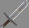
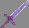

当サーバーはMinecraft Java Edititon版のOptifine 1.18.2を起動構成に使用したプラグインサーバーとなります。
内容はファンタジーのMMORPGです。
| ID | 名称 | アイコン | メイン画像 | 説明文 | 登録日 | 更新日 | ティア | 要求レベル | 要求クラス | 攻撃力 | 攻撃速度 | その他ステータス | 売価 |
|---|---|---|---|---|---|---|---|---|---|---|---|---|---|
| 1 | ロングソード |  | 未設定 | 未設定 | 2024-02-09 | 2024-02-09 | COMMON | 1 | 全クラス | 6.8 | 1 | 武器ダメージ+5% | 1,000Gold |
| 2 | お詫びの剣 |  | 未設定 | 未設定 | 2024-02-09 | 2024-02-09 | VERYRARE | 1 | 冒険者 ブレイダー マジシャン | 12 | 1.8 | 最大体力＋180 最大マナ+120 移動速度+0.3 | 50,000Gold |